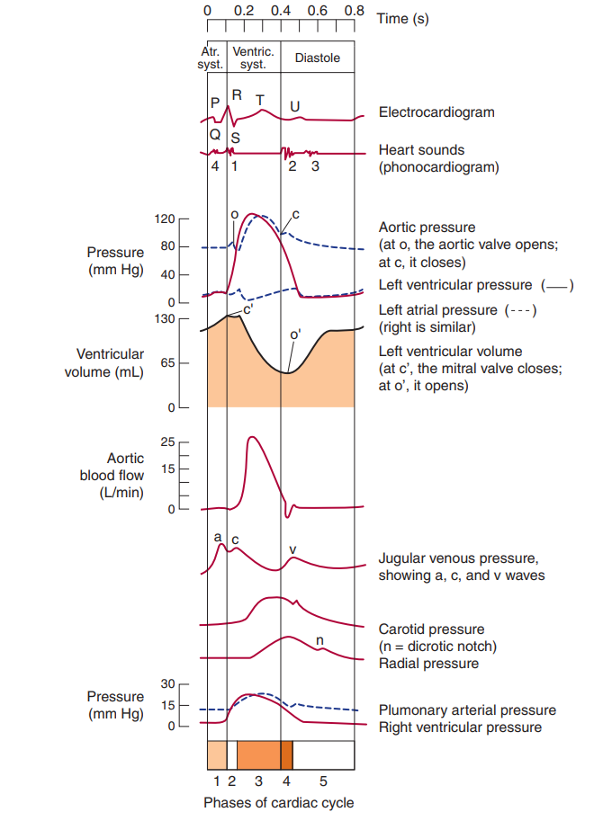
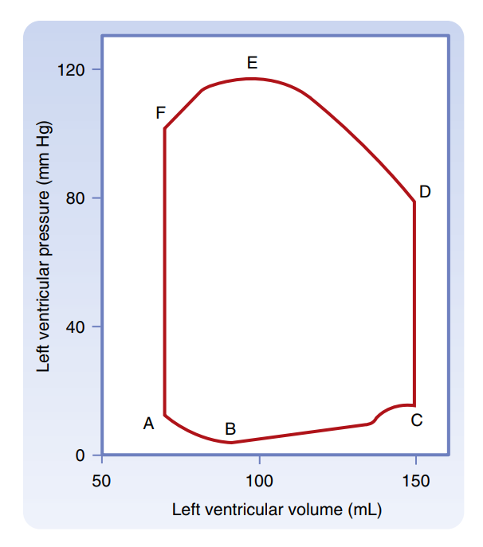
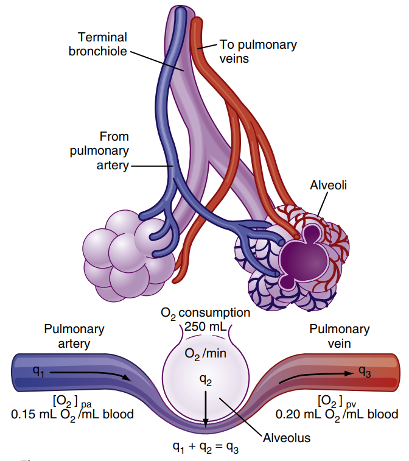
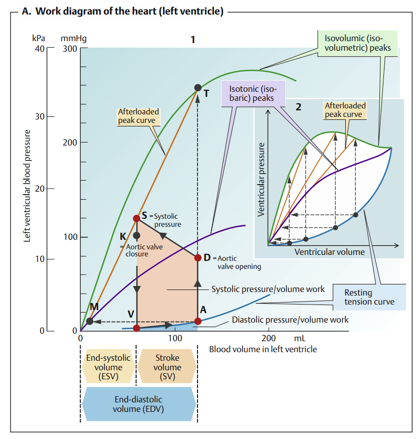
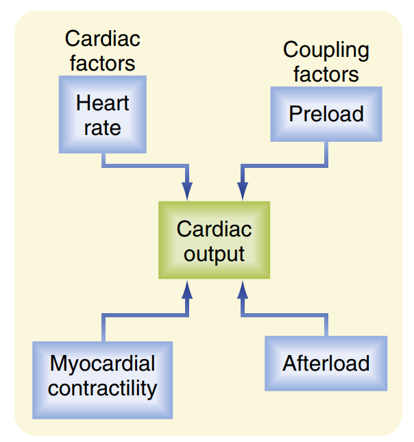

Sinh lý Chu kỳ tim & Cung lượng tim
Hệ thống hóa các sự kiện cơ học trong chu kỳ hoạt động của tim, các tiếng tim, nguyên lý đo và các cơ chế điều hòa huyết động học.
Phần I: Sinh lý Chu kỳ tim (Cardiac Cycle)
Chu kỳ tim (Cardiac Cycle) là một chuỗi các sự kiện điện học và cơ học xảy ra nối tiếp nhau, lặp đi lặp lại một cách tuần hoàn trong mỗi nhịp đập của tim, thực hiện chức năng bơm máu vào hệ động mạch và hút máu trở về từ hệ tĩnh mạch.
Ở một người trưởng thành bình thường có tần số tim nghỉ ngơi khoảng 75 lần/phút, một chu kỳ tim kéo dài đúng 0,8 giây. Trong đó, tổng thời gian tâm trương (tim giãn để đổ đầy máu, chiếm 0,5 giây) luôn dài hơn thời gian tâm thu (tim co bóp tống máu, chiếm 0,3 giây), giúp cơ tim có đủ thời gian nghỉ ngơi và nhận máu nuôi dưỡng từ mạch vành.
1. Giai đoạn Tâm thu (Systole): Tổng thời gian thất thu là 0,3s
Tâm thu bao gồm các hoạt động co cơ của tâm nhĩ và tâm thất để chủ động đẩy máu đi:
- Thu nhĩ (Atrial systole - 0,1s): Xảy ra ngay sau sóng P trên điện tâm đồ (biểu thị khử cực hai tâm nhĩ). Tâm nhĩ co bóp giúp đẩy nốt 30% thể tích máu còn lại xuống tâm thất (70% lượng máu trước đó đã tự động chảy thụ động xuống thất trong kỳ tâm trương). Sự dội máu mạnh vào thành tâm thất căng giãn ở cuối giai đoạn này tạo ra tiếng tim thứ tư (T4 / S4), thường là tiếng tim bệnh lý (như phì đại cơ thất) và rất khó nghe thấy ở người bình thường.
-
Thu thất (Ventricular systole - 0,3s): Được tính từ thời điểm đóng van nhĩ thất đến khi
đóng van bán nguyệt, chia làm 2 pha rõ rệt:
- Pha co đồng thể tích (Isovolumetric contraction): Bắt đầu khi áp suất trong tâm thất bắt đầu tăng vượt quá áp suất tâm nhĩ, làm đóng lập tức van nhĩ thất (van 2 lá và 3 lá), tạo nên tiếng tim thứ nhất (T1 / S1) trầm, dài. Lúc này van bán nguyệt (van động mạch chủ và phổi) chưa mở. Tâm thất tạm thời là một buồng kín tuyệt đối. Cơ thất co gồng mạnh làm áp suất thất tăng vọt rất nhanh, nhưng thể tích máu và chiều dài sợi cơ không hề thay đổi.
- Pha bơm máu ra ngoài (Ventricular ejection): Khi áp suất tâm thất vượt qua áp suất động mạch chủ (khoảng 80 mmHg ở thất trái) và động mạch phổi (khoảng 10 mmHg ở thất phải), van bán nguyệt mở toang. Pha này chia thành pha bơm máu nhanh (1/3 thời gian đầu, tống đi 70% lượng máu nhát bóp) và pha bơm máu chậm (2/3 thời gian sau, tống nốt 30% lượng máu còn lại).
2. Giai đoạn Tâm trương (Diastole): Kéo dài khoảng 0,5s
Là giai đoạn cơ tim thư giãn hoàn toàn để hút máu từ các tĩnh mạch lớn về tim:
- Giãn đồng thể tích (Isovolumetric relaxation): Khi thất tống máu xong và bắt đầu giãn, áp suất thất sụt giảm nhanh chóng xuống dưới áp suất động mạch chủ và phổi, làm đóng lập tức các van bán nguyệt để ngăn dòng máu chảy ngược, tạo nên tiếng tim thứ hai (T2 / S2) thanh, ngắn. Lúc này các van nhĩ thất vẫn chưa mở, tâm thất lại là buồng kín, áp suất tiếp tục giảm sâu thẳng đứng trong khi thể tích máu không đổi.
-
Giai đoạn tim hút máu về (Ventricular filling): Khi áp suất thất giảm xuống thấp hơn áp
suất trong tâm nhĩ, van nhĩ thất mở ra.
- Pha hút máu về nhanh: Máu tích lũy ở nhĩ ồ ạt tràn xuống thất rất nhanh dưới lực hút âm của thất (chiếm 70% lượng máu đổ đầy). Dòng máu dội mạnh vào thành thất đang giãn rộng tạo ra tiếng tim thứ ba (T3 / S3), có thể sinh lý ở trẻ em nhưng thường là bệnh lý ở người lớn (suy tim).
- Pha hút máu về chậm (Diastasis): Máu từ các tĩnh mạch chủ và phổi chảy từ từ qua nhĩ đi thẳng xuống thất. Pha này sẽ gối tiếp vào pha thu nhĩ của chu kỳ tim tiếp theo để hoàn thành 100% lượng máu nạp vào tâm thất.


Phần II: Sinh lý Cung lượng tim (Cardiac Output)
1. Khái niệm và Công thức tính toán
Cung lượng tim (Cardiac Output - CO) là thể tích máu được một tâm thất bơm vào vòng tuần hoàn trong thời gian một phút. Ở người trưởng thành khỏe mạnh lúc nghỉ ngơi, cung lượng tim trung bình dao động khoảng 5,0 L/phút.
• HR (Heart Rate): Tần số tim hay nhịp tim (bình thường khoảng 70 - 75 nhịp/phút).
• SV (Stroke Volume): Thể tích nhát bóp, là lượng máu một tâm thất tống đi trong mỗi nhịp co bóp (khoảng 70 - 90 mL).
Thể tích nhát bóp (SV) là hiệu số của lượng máu nạp đầy thất cuối kỳ tâm trương và lượng máu còn sót lại sau khi tống máu cuối kỳ tâm thu:
• ESV (End-Systolic Volume): Thể tích cuối tâm thu (khoảng 40 - 50 mL).
• Phân suất tống máu (Ejection Fraction - EF): Được tính bằng EF = SV / EDV (bình thường đạt >50-55%, chỉ số vàng đánh giá chức năng bơm máu của tim).
2. Các phương pháp đo Cung lượng tim trên lâm sàng
-
Nguyên lý Fick (Fick Principle): Dựa trên định luật bảo toàn khối lượng. Lượng oxy tiêu
thụ bởi các mô cơ quan bằng tích số của cung lượng tim và hiệu số nồng độ oxy giữa máu động mạch và máu
tĩnh mạch. Do đó:
CO = Mức tiêu thụ O2 / (Nồng độ O2 động mạch - Nồng độ O2 tĩnh mạch trộn)
- Phương pháp pha loãng chất chỉ thị (Indicator dilution): Bơm một lượng chất màu đặc hiệu hoặc chất chỉ thị nhiệt đã biết trước vào tĩnh mạch lớn, sau đó đo sự thay đổi nồng độ của chất này tại động mạch ngoại biên theo thời gian để vẽ đường cong đào thải và tính CO.

3. Bốn yếu tố sinh lý điều hòa Cung lượng tim
Cung lượng tim được kiểm soát chặt chẽ thông qua việc điều hòa Nhịp tim (HR) và Thể tích nhát bóp (SV) bởi 4 nhân tố:
-
Nhịp tim (Heart Rate): Chịu sự chi phối của hệ thần kinh tự chủ:
• Thần kinh giao cảm giải phóng Norepinephrine tác động thụ thể β1 adrenergic ở nút xoang làm tăng dốc điện thế tự phát, tăng nhịp tim.
• Thần kinh phó giao cảm (dây X) giải phóng Acetylcholine tác động thụ thể Muscarinic làm tăng mở kênh K+, ưu phân cực màng nút xoang, giảm nhịp tim. -
Tiền tải (Preload): Là mức độ kéo căng của các sợi cơ tim ngay trước khi co bóp (tương
ứng với thể tích cuối tâm trương EDV). EDV phụ thuộc chính vào lượng máu tĩnh mạch trở về tim.
• Định luật Frank-Starling: Lượng máu tĩnh mạch đổ về tim càng lớn → cơ tim càng bị kéo căng kéo dài → tạo lực co bóp cơ tim càng mạnh ở chu kỳ ngay sau đó, giúp tống hết lượng máu thừa đi. - Hậu tải (Afterload): Là áp suất sức cản mà tâm thất phải co bóp vượt qua để có thể mở được van bán nguyệt tống máu đi (chính là áp suất động mạch chủ đối với thất trái và động mạch phổi đối với thất phải). Hậu tải tăng (ví dụ trong tăng huyết áp, hẹp van động mạch chủ) sẽ trực tiếp **làm giảm thể tích nhát bóp (SV)**.
- Sức co bóp cơ tim (Contractility / Inotropism): Khả năng tạo lực co bóp của sợi cơ tim tại một mức Tiền tải và Hậu tải cố định. Sức co bóp tăng chủ yếu do tăng dòng ion Ca2+ đi vào nội bào trong pha điện thế hoạt động (dưới tác dụng giao cảm của catecholamine hoặc thuốc trợ tim nhóm Digitalis). Tăng sức co bóp giúp tăng SV và tăng phân suất tống máu EF.
Thuốc trợ tim Digitalis (Digoxin) ức chế bơm Na+-K+-ATPase trên màng tế bào cơ tim. Điều này làm tăng nồng độ Na+ nội bào, dẫn đến gián tiếp ức chế bơm trao đổi Na+-Ca2+ (bơm đẩy Ca2+ ra ngoài). Kết quả là tích tụ Ca2+ trong bào tương cơ tim tăng lên, cung cấp nhiều Ca2+ hơn cho các sợi actin-myosin trượt lên nhau, làm **tăng mạnh mẽ sức co bóp cơ tim** trong điều trị suy tim.


Tài liệu tham khảo
- Đặng HAT. Sinh lý TIM MẠCH YDS 2025 [Video]. Bs. Linh O'la Scar; 2025.
- Koeppen BM, Stanton BA. Berne and Levy Physiology. 8th ed. Elsevier; 2024.
- Barrett KE, Barman SM, Boitano S, Brooks HL. Ganong's Review of Medical Physiology. 24th ed. McGraw-Hill Medical; 2012.
- Silbernagl S, Despopoulos A. Color Atlas of Physiology. 6th ed. Thieme; 2009.